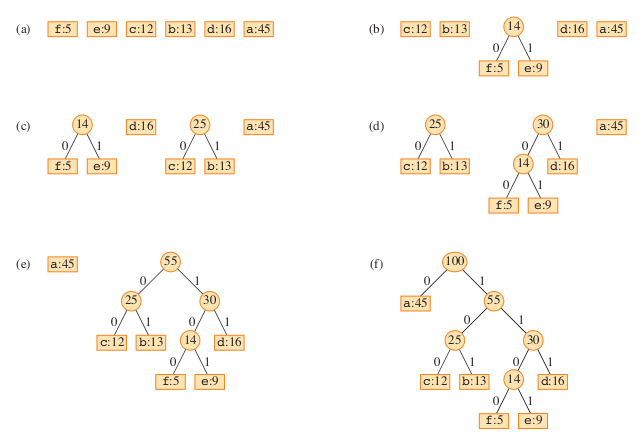

Data Structure and Algorithm Design II
Module 9
Xingang (Ian) Fang
Sections
Greedy Algorithms 1
Greedy Algorithms
Xingang (Ian) Fang
Outline
Overview
Related Algorithmic Paradigms
Applications
Bin Packing Problem (BPP)
Hoffman Coding
Overview
An algorithm that makes the locally optimal choice at each stage with the hopes of finding the global optimum
Characteristics
Heuristic
Local optimum
Intuitive
No long term planning
Approximate, no guarantee to find the best solution
Less time complexity than exact algorithms
Related Algorithmic Paradigms
Greedy algorithms are related to backtracking because they both make decisions at each step.
Greedy |
Backtracking |
|---|---|
Approximate |
Exact |
Make a decision |
Make a decision |
Never look back |
Look back |
No long term planning |
Long term planning |
Less time complexity |
More time complexity |
May fail to find the best solution |
Always find the best solution by finding all solutions |
Applications
Suitable for optimization problems that are too complex to solve with exact algorithms.
Graph problems
Shortest path: Dijkstra’s algorithm
Minimum spanning tree: Prim’s algorithm, Kruskal’s algorithm
Graph coloring
Bin packing problem
Huffman coding
Activity selection problem
Fractional knapsack problem
Bin Packing Problem (BPP)
Given a set of items with different weights and bins with fixed capacity, find the minimum number of bins required to pack all items.
Formal definition
Items have size between 0 and 1
Bins have capacity 1
Each item must be packed into a bin
Minimize the number of bins used to pack all items
Classic combinatorial optimization problem
NP-hard problem
Applications in logistics, scheduling, resource allocation, etc.
Two variations of the problem
Online: Items arrive one at a time and must be immediately packed
Offline: All items are known in advance
Algorithms to Solve Bin Packing Problem
Exact algorithms
Brute force
Dynamic programming
Branch and bound
Integer linear programming
Approximation algorithms
Greedy algorithms
Why is not backtracking a good idea for solving BPP?
Baseline Solution
Brute force solution serves as the baseline solution
Create all possible permutations of items
Pack every permutation into bins in a deterministic order (e.g. online next fit)
Find the permutation that uses the fewest bins
Exercise
Which step is the determining factor for the time complexity of the algorithm?
What are the time complexities of each step?
Greedy Solution
Process items one by one, in each step, decide which bin to put the item in. Create a new bin if necessary.
Heuristics for online bin packing
Next Fit: only check the last bin
First Fit: check all previous bins for first fit
Best Fit: check all previous bins for best (tightest) fit
A simple greedy solution for offline bin packing:
Sort items in decreasing order of size
Pack items into bins using online method (first fit or best fit)
Hoffman Coding
A lossless data compression algorithm
Variable length encoding
Based on the frequency of characters
Motivation
ASCII uses 8 bits to encode each character
Some characters are used more frequently than others
Less bits for more frequent characters to save space
Applications
Building-block for other algorithms
JPEG, MP3, etc.
{kind=link}
Optimal Prefix Code
Huffman coding is an optimal prefix code
Prefix code (a.k.a. prefix-free code)
no code is a prefix of another code
no ambiguity when decoding
Optimal
Minimizes the expected length of the encoded message
The most frequent characters are encoded with the fewest bits
Employ a binary tree to represent the Huffman coding scheme
Full binary tree
Leaf nodes represent characters - guarantee prefix code
Each internal node means a bit in the codeword
Encoding Tree Examples
Left: Fixed length encoding
Total space: 3 * (45 + 13 + 12 + 16 + 9 + 5) = 300 bits
Right: Huffman coding
Total space: 1 * 45 + 2 * 13 + 2 * 12 + 3 * 16 + 4 * 9 + 4 * 5 = 199 bits
Contents in nodes:
Leaf node: <character>: <frequency>
Internal node: <frequency of subtree>
Credit: Introduction to Algorithms, 4th Ed., T. Cormen et al.
Algorithm to build a Huffman coding tree
This is a greedy algorithm that builds the tree bottom-up from the least frequent characters to the most frequent characters.
Pseudo-code from Wikipedia
Create a leaf node for each symbol and add it to the priority queue.
While there is more than one node in the queue:
Remove the two nodes of lowest frequency from the queue
Create a new internal node with these two nodes as children and with frequency equal to the sum of the two nodes’ frequency.
Add the new node to the queue.
The remaining node is the root node and the tree is complete.
Steps to build the example tree
Credit: Introduction to Algorithms, 4th Ed., T. Cormen et al.